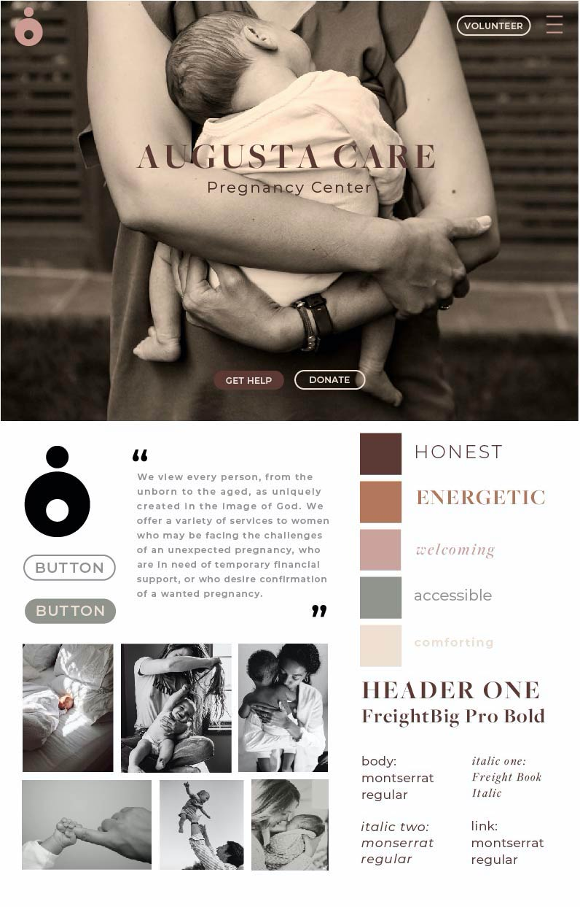
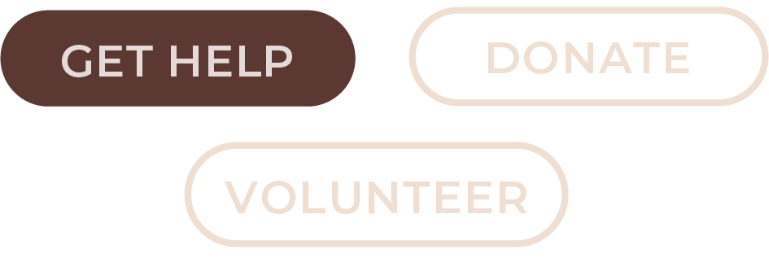

Solution
Style Tile and CTA Buttons
Style Tile
CTA: Call to Action
For my site, I decided to create three CTA buttons targeting my two audiences. Clients who need resources and those who want to get involved/help. I believe my “Get Help” button is most important. After conducting an interview with a volunteer, I was able to determine what the CPC websites main goal was. To provide information to those seeking help. I also know that the CPC is seeking out volunteers and donations continuosly, so I wanted to create CTAs to make that information easily accessible as well..